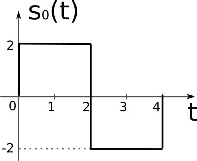
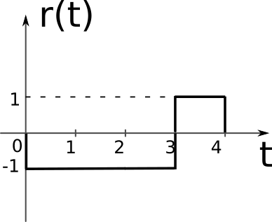
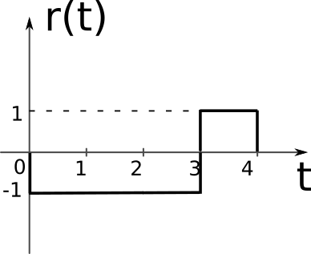
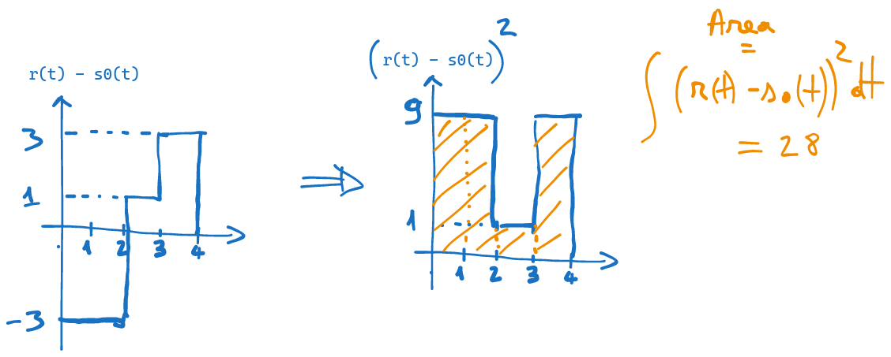
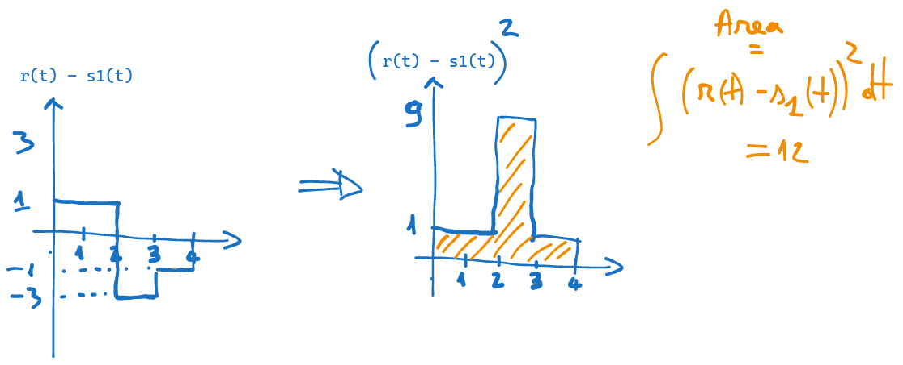

12 Seminar 05: Decizii cu mai multe eșantioane
\[ \newcommand{\grtlessH}{\underset{{H_0}}{\overset{H_{1}}{\gtrless}}} \renewcommand{\vec}[1]{\mathbf{#1}} \]
12.1 Exercițiul 1
Un semnal poate avea două valori, \(s_0(t) = 0\) (ipoteza \(H_0\)) sau \(s_1(t) = 6\) (ipoteza \(H_1\)).
Semnalul este afectat de zgomot gaussian \(\mathcal{N}(0, \sigma^2=1)\).
La recepție se iau 5 eșantioane, cu valorile \(\left\{ 1.1, 4.4, 3.7, 4.1, 3.8 \right\}\).
- a). Ce decizie se ia cu criteriul ML?
- b). Ce decizie se ia cu criteriul MPE, dacă \(P(H_0) = 2/3\) and \(P(H_1) = 1/3\)?
- c). Care e intervalul de valori posibile ale lui \(P(H_0)\) pentru ca decizia cu criteriul MPE să fie \(D_0\)?
Rezolvare
Întrucât zgomotul este de tip gaussian, problema de decizie se reduce la compararea distanțelor euclidiene între semnalul recepționat și cele două semnale posibile. \[d(\mathbf{r}, \mathbf{s_0})^2 \grtlessH d(\mathbf{r}, \mathbf{s_1})^2 + 2 \sigma^2 \ln(K)\]
Întrucât decizia se ia pe baza a 5 eșantioane, \(\mathbf{r}\), \(\mathbf{s_0}\) și \(\mathbf{s_1}\) sunt vectori cu 5 elemente.
Când avem mai multe eșantioane, se lucrează cu vectori și se ia o singură decizie. Nu se iau \(N\) decizii pe baza fiecărui eșantion în parte.
Vectorul \(\mathbf{r}\) cu eșantioanele observate este: \[\mathbf{r} = \left[ 1.1, 4.4, 3.7, 4.1, 3.8 \right]\]
Vectorii \(\mathbf{s_0}\) și \(\mathbf{s_1}\) reprezintă valorile semnalelor originale \(s_0(t)\) și \(s_1(t)\), fără zgomot, la momentele de timp de eșantionare \(t_1, t_2, \ldots, t_N\). Întrucât \(s_0(t) = 0\), cele 5 eșantioane ar trebui să fie toate 0, indiferent de momentul de timp: \[\mathbf{s_0} = \left[ 0, 0, 0, 0, 0 \right]\] Iar pentru \(s_1(t) = 6\), avem: \[\mathbf{s_1} = \left[ 6, 6, 6, 6, 6 \right]\]
Decizia se ia comparând distanțele euclidiene. Avem: \[d(\mathbf{r}, \mathbf{s_0})^2 = (1.1 - 0)^2 + (4.4 - 0)^2 + (3.7 - 0)^2 + (4.1 - 0)^2 + (3.8 - 0)^2 = 65.51\] \[d(\mathbf{r}, \mathbf{s_1})^2 = (1.1 - 6)^2 + (4.4 - 6)^2 + (3.7 - 6)^2 + (4.1 - 6)^2 + (3.8 - 6)^2 = 40.31\]
a). Pentru criteriul ML, \(K=1\), \(\ln(K)=0\) și decizia este dată de distanța cea mai mică: \[d(\mathbf{r}, \mathbf{s_0})^2 > d(\mathbf{r}, \mathbf{s_1})^2 \rightarrow D_1\]
b). Pentru criteriul MPE, \(K\) este: \[K = \frac{P(H_0)}{P(H_1)} = 2\] \[2 \sigma^2 \ln(K) = 2 \cdot 1 \cdot 0.69 = 1.38\]
Decizia este de asemenea \(D_1\): \[65.51 > 40.31 + 1.38\rightarrow D_1\]
c). Aici, trebuie să găsim valorile lui \(P(H_0)\) care conduc la decizia \(D_0\) cu criteriul MPE.
Probabilitatea \(P(H_0)\) influențează doar termenul \(K\). Pentru ca decizia să fie \(D_0\), trebuie ca termenul din dreapta să depășească termenul din stânga în relația: \[65.51 < 40.31 + 2 \cdot 1 \cdot \ln(K) \rightarrow D_0\] \[\Leftrightarrow 2 \ln(K) > 65.51-40.31\] \[\Leftrightarrow \ln(K) > 12.7\] Aplicând \(e^x\) ambilor termeni, avem mai departe: \[\Leftrightarrow K > e^{12.7}\] La rândul lui, \(K = \frac{P(H_0)}{P(H_1)}\), iar \(P(H_1)\) nu este o variabilă independentă, ci depinde de \(P(H_0)\), fiind \(P(H_1) = 1 - P(H_0)\) (suma celor două probabilități este 1). Așadar, avem: \[\Leftrightarrow \frac{P(H_0)}{1-P(H_0)} > e^{12.7}\] \[\Leftrightarrow P(H_0) > e^{12.7} - P(H_0) \cdot e^{12.7}\] \[\Leftrightarrow P(H_0)(1 + e^{12.7}) > e^{12.7}\] \[\Leftrightarrow P(H_0) > \frac{e^{12.7}}{1 + e^{12.7}} = 0.99999694888\]
Așadar, pentru ca decizia să fie \(D_0\), probabilitatea \(P(H_0)\) trebuie să fie mai mare decât 0.99999694888.
12.2 Exercițiul 2
Fie detecția unui semnal \(s_1(t) = 3 \sin(2 \pi f_1 t)\) care poate fi prezent (ipoteza \(H_1\)) sau absent (\(s_0(t)=0\), ipoteza \(H_0\)). Semnalul este afectat de zgomot gaussian \(\mathcal{ N}(0, \sigma^2=1)\). Valoarea lui \(f_1 = 1\). La recepție se iau două eșantioane la momentele de timp \(t_1\) și \(t_2\).
La recepție se iau citesc două eșantioane cu valorile \(\left\{ 1.1, 4.4 \right\}\), la momentele de timp \(t_1 = 0.125\) și \(t_2 = 0.625\).
Probabilitățile a priori sunt \(P(H_0) = 1/3\) și \(P(H_1) = 2/3\).
Ce decizie se ia cu criteriul Minimum Probability of Error?
Rezolvare
Diferența față de exercițiul anterior este că semnalul \(s_1(t)\) nu mai este constant. În rest, zgomotul fiind tot de natură gaussiană, se procedează la fel ca în exercițiul anterior, lucrând cu vectori de două elemente.
Vectorul observațiilor este: \[\mathbf{r} = \left[ 1.1, 4.4 \right]\] La momentele de timp \(t_1 = 0.125\) și \(t_2 = 0.625\), semnalul \(s_0(t) = 0\) are valorile: \[\mathbf{s_0} = \left[ 0, 0 \right]\] iar semnalul \(s_1(t) = 3 \sin(2 \pi f_1 t)\) are valorile: \[ \begin{align} \mathbf{s_1} &= \left[ 3 \sin(2 \pi f_1 t_1), 3 \sin(2 \pi f_1 t_2) \right] \\ &= \left[ 3 \sin(2 \pi \cdot 1 \cdot 0.125), 3 \sin(2 \pi \cdot 1 \cdot 0.625) \right] \\ &= \left[ 3 \sin(\frac{\pi}{4}), 3 \sin(\frac{5\pi}{4})\right] \\ &= \left[ 2.12, -2.12 \right] \end{align} \]
Aplicăm criteriul MPE, folosind relația \(d(\mathbf{r}, \mathbf{s_0})^2 \grtlessH d(\mathbf{r}, \mathbf{s_1})^2 + 2 \sigma^2 \ln(K)\). \[d(\mathbf{r}, \mathbf{s_0})^2 = (1.1 - 0)^2 + (4.4 - 0)^2 = 20.57\] \[d(\mathbf{r}, \mathbf{s_1})^2 = (1.1 - 2.12)^2 + (4.4 + 2.12)^2 = 43.55\] \[2\sigma^2 \ln(K) = 2 \cdot 1 \cdot \ln(\frac{1}{2}) = -1.38\]
Decizia este \(D_0\): \[20.57 < 43.55 - 1.38 \rightarrow D_0\]
12.3 Exercițiul 3
Un semnal transmis poate avea forma \(s_0(t)\) sau \(s_1(t)\), conform figurilor. La recepție se primește semnalul \(r(t)\) reprezentat în figură. Semnalul este afectat de zgomot gaussian \(\mathcal{N}(0, \sigma^2=2)\). Se consideră \(P(H_0) = \frac{1}{4}\) și \(P(H_1) = \frac{3}{4}\).
Găsiți decizia conform criteriului MPE, în două cazuri distincte:
- folosind trei eșantioane luate la momentele de timp \(t_1 = 0.5\), \(t_2 = 1.5\) și \(t_2 = 3.5\)
- folosind metoda observației continue (fără eșantionare)
  

Rezolvare
- Zgomotul fiind cu distribuție normală, procedăm ca în exercițiile anterioare, lucrând cu vectori de 3 elemente.
Întrucât nu avem expresiile semnalelor, ci doar reprezentări grafice, vom lua valorile semnalelor din figuri.
La momentele de timp \(t_1 = 0.5\), \(t_2 = 1.5\) și \(t_2 = 3.5\), semnalul \(s_0(t)\) are valorile: \[\mathbf{s_0} = \left[ 2, 2, -2 \right]\] semnalul \(s_1(t)\) are valorile: \[\mathbf{s_1} = \left[ -2, -2, 2 \right]\] iar semnalul recepționat \(r(t)\) are valorile: \[\mathbf{r} = \left[ -1, -1, 1 \right]\]
Avem: \[d(\mathbf{r}, \mathbf{s_0})^2 = (-1 - 2)^2 + (-1 - 2)^2 + (1 + 2)^2 = 27\] \[d(\mathbf{r}, \mathbf{s_1})^2 = (-1 + 2)^2 + (-1 + 2)^2 + (1 - 2)^2 = 3\] \[2\sigma^2 \ln(K) = 2 \cdot 2 \cdot \ln(\frac{1}{3}) = -4.39\] \[d(\mathbf{r}, \mathbf{s_0})^2 > d(\mathbf{r}, \mathbf{s_1})^2 + 2\sigma^2 \ln(K) \Rightarrow D_1\] Decizia este \(D_1\).
b). În cazul observației continue, nu mai lucrăm cu vectori, ci direct cu funcțiile continue ale semnalelor \(s_0(t)\), \(s_1(t)\) și \(r(t)\).
Se folosește aceeași comparație: \[d(r(t), s_0(t))^2 \grtlessH d(r(t), s_1(t))^2 + 2 \sigma^2 \ln(K)\] doar că acum distanțele sunt calculate ca integrale. Distanța (la pătrat) între două semnale continue \(a(t)\) și \(b(t)\) este: \[d(\; a(t), b(t) \;)^2 = \int_{-\infty}^{\infty} \left( a(t) - b(t) \right) ^2 dt\]
În cazul nostru, distanțele între semnale pot fi calculate în mod grafic. Pornind de la reprezentarea grafică a semnalelor \(r(t)\) și \(s_0(t)\), reprezentăm mai jos semnalul diferență \(r(t) - s_0(t)\), apoi acest semnal ridicat la pătrat, iar apoi îi calculăm integrala ca aria de sub grafic. 
În mod similar calculăm distanța între \(r(t)\) și \(s_1(t)\): 
Cu aceste distanțe calculate, putem calcula decizia luată cu criteriul MPE: \[d(r(t), s_0(t))^2 = 28\] \[d(r(t), s_1(t))^2 = 12\] \[d(\mathbf{r}, \mathbf{s_0})^2 > d(\mathbf{r}, \mathbf{s_1})^2 + 2\sigma^2 \ln(K) \Rightarrow D_1\] Decizia este \(D_1\).